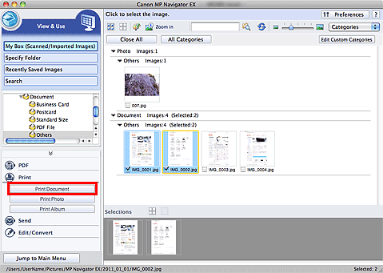
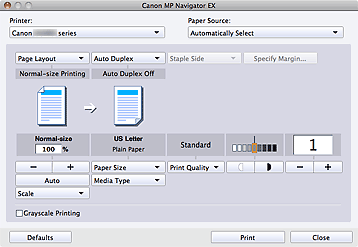

-
Scan documents into MP Navigator EX and save them, then open the View & Use window from the Navigation Mode screen and select images.
 Note
Note-
See "Let's Try Scanning" to scan images into MP Navigator EX.
-
You can also select images saved on a memory card or computer.
-
-
Click Print, then click Print Document on the list.
 -
Specify print settings as required.
In the displayed dialog, specify print count, quality, scale, etc.
 Important
Important-
At normal-size (100%), some images may be printed small or with some portions cropped. In that case, select Auto to resize the print in proportion to the paper size.
-
-
Click Print. In the displayed dialog, click Print.
Starts printing.
Note-
Click Preview in the Print dialog to preview the print result.
-
To cancel while spooling, click Cancel. To cancel while printing, select the printer icon in the Dock and click Pause Printer or Delete.
-